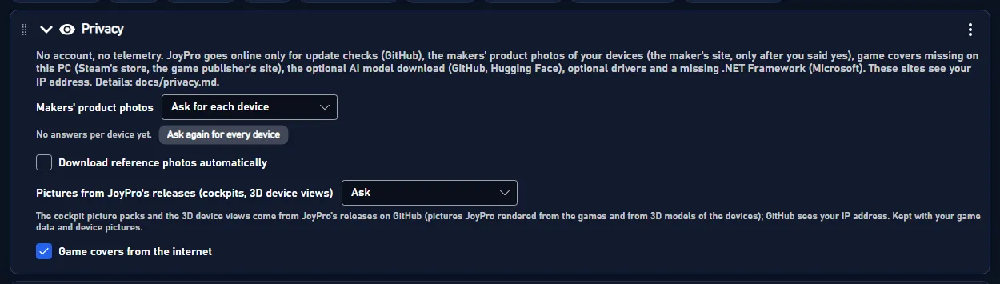

#Projektside
KnapskrevetVærktøjstip Åbner komponentens officielle udgivelsesside i din browser
På et komponentkort: åbner komponentens officielle udgivelsesside i din browser, hvor dens eget projekt beskriver den og tilbyder sine downloads.
Siden Indstillinger rummer alle JoyPros indstillinger i 25 afsnit, der kan åbnes og lukkes. Et søgefelt finder en indstilling ud fra et ord ("meddelelsesområde", "opdatering", "fotos"), fanerne øverst hopper til et afsnit, og du kan sætte afsnittene i din egen rækkefølge. Hver indstilling gemmes med det samme og overlever en genstart; der er ingen Gem-knap.


Første start åbner kun Spil; alt andet er et klik væk. De fleste har kun brug for Spil, Udseende, Sprog og Om JoyPro og opdateringer.
| Afsnit | Hvad du indstiller der |
|---|---|
| Spil | Hvilke spil du har, tilknyttede mapper, overvågningen af spilkonfigurationer, den vJoy-enhed, JoyPro bruger |
| Tildelinger | Følg indgang, optagelse af knapper, der hviler trykket ned |
| Rundvisninger | Velkomsten, hjælpetilstand (F1) og alle rundvisninger, så de kan startes igen |
| Start | Åbn den seneste profil ved start |
| Sider i den nederste bjælke | Skjul sider, ændr deres rækkefølge |
| Sprog | JoyPros sprog |
| Udseende | Lys, mørk eller dine egne farver, tekststørrelse, skalering af brugerfladen, temaeditor |
| Kør i baggrunden | Hjælperen i meddelelsesområdet, der bliver ved med at overvåge dine spil |
| Bekræftelser | De spørgsmål, JoyPro stiller før en ændring |
| Om JoyPro og opdateringer | Version, projektside, opdateringer |
| Anonymitet | Producenters fotos, billedpakker, spilomslag |
| Brugsstatistik | Siden Statistik, rangeringen af dine mest brugte fly |
| Telemetrioptagelse | Optag dine flyvninger som Tacview |
| Tegninger | Hvordan JoyPro tegner dine enheder; nulstil dine layoutændringer |
| Rapportér et problem | Én zip med alt, hvad der skal til for at finde et problem |
| Lokal AI | Den valgfri sprogmodel |
| Komponenter | vJoy, HidHide, ViGEmBus og andre valgfri programmer |
| Enheder | Dine enheder, deres navne, erstat eller fjern en enhed |
| Kommandolister (DB) og spilstier | Information for eksperter |
| DCS: standardtildelinger | DCS' egne standardtildelinger i DCS-installationen |
| Kommandolister for DCS, Star Citizen og IL-2 | Ekspertopdateringer af kommandolisterne |
| Spillenes force feedback-indstillinger | Spillenes egne indstillinger for force feedback |
| Force feedback i DCS: byt om og invertér | DCS' force feedback-retning pr. enhed |


Ét kort pr. spil, som JoyPro understøtter, og som du har, med dets omslag, "Installeret" eller "Ikke installeret", hvor det ligger, og hvor det gemmer sine styringer.
gui.vromfs.bin og lang.vromfs.bin ud, kun til læsning, for at få alle handlinger for fly og helikoptere. Slået fra: kun JoyPros egen liste over de War Thunder-handlinger, den kender.Her ændres intet i et spil. En tilknyttet mappe bestemmer, hvor import og eksport læser og skriver; et skjult spil får intet eksportkort og overvåges ikke.


Dit svar på opsætningsguidens spørgsmål Bruger du headtracking eller VR? Med headtracking (TrackIR, et webcam med ansigtssporing, en Tobii-eyetracker) eller VR ser du dig omkring ved at dreje hovedet.
Alle JoyPros rundvisninger samlet ét sted (Hjælpetilstand og rundvisninger):


Åbn den seneste profil ved start (slået til som standard) åbner den profil, du sidst havde åben; stien vises nedenunder. Beskeden forklarer profilhistorikken: hver ændring gemmes af sig selv, og hver gemning er en version i Historik (øverste bjælke). Gamle versioner tyndes ud: alle fra det seneste døgn, derefter én pr. time i 7 dage, én pr. dag i 60 dage og én pr. uge derefter; højst 200 MB pr. profil og 1 GB i alt. Versioner, du beholder, bliver.


Én række pr. side i den nederste bjælke. Fjern fluebenet ved en side, du ikke bruger; træk en række i dens håndtag (eller brug pilene) for at ændre rækkefølgen. En skjult side kan stadig åbnes fra andre sider (for eksempel Åbn siden Modifikatorer) og vises i bjælken, mens den er åben. Indstillinger kan ikke skjules. Nulstil til standard bringer JoyPros rækkefølge tilbage med alle sider vist.


JoyPros sprog: engelsk og 38 andre sprog eller Windows-sprog (Windows' visningssprog, eller engelsk, når JoyPro ikke har det). Oversættelserne er lavet af en maskine og kan lyde mærkelige; navne på spilkommandoer forbliver, som spillet kalder dem. Menuen i hjælperen i meddelelsesområdet følger sproget.


JoyPro kan kun opdage, at du har ændret styringer i et spil, mens den kører. En lille hjælper bliver ved med at overvåge som et ikon i meddelelsesområdet, efter du har lukket JoyPro; den bruger ingen mærkbar CPU og nogle få MB hukommelse.


JoyPro spørger før en ændring, der er svær at tage tilbage. De spørgsmål, du kan slå fra, står her: at fjerne en handling fra en relation, en import, der smider ændringer væk, som du endnu ikke har eksporteret, den første eksport til et spil, som profilen aldrig har importeret fra, en eksport, der fjerner tildelinger, og tippet om overvågning i importen. Et spørgsmål, du har slået fra med "Spørg ikke igen", vises her uden flueben; Spørg om alt igen slår dem alle til igen.


Versionen, build og licenslinjen, Projektside og Udgivelsesside, tredjepartsmeddelelserne og opdateringerne: Søg efter opdateringer, Installér opdatering (henter den nye version, kontrollerer den, installerer den og genstarter JoyPro), Søg efter opdateringer ved start og Tilbyd den igen for en version, du har sprunget over. "Hvor opdateringer kommer fra (for eksperter)" nævner det GitHub-repository, hvis udgivelser JoyPro installerer.


JoyPro har ingen konto og ingen telemetri. Den går kun online for at søge efter opdateringer, for producenters produktfotos (efter du har sagt ja), for spilomslag, der mangler på denne pc, for download af den valgfri AI-model, for valgfri drivere og for et manglende .NET Framework.


JoyPro noterer, hvilke spil, fly og skibe du bruger, ud fra spillenes egne logfiler og spilletiden i Steam, og gemmer et sammendrag på denne pc.


Optager hver runde, mission eller flyvning med al den telemetri, spillet sender (position, flyvestilling, hastigheder, styringer, motorer, våben, hændelser), ligesom Tacview gør for DCS, for hvert spil, JoyPro læser telemetri fra.


Hvordan JoyPro tegner dine enheder på siden Layout og på enhedskortene (streger eller cel-shaded, JoyPros farver eller dine egne), separat for skærmen og for snydeark og eksporter. Nulstil alle mine layoutændringer... sætter hver enheds billede tilbage til JoyPros standard (dine markørpositioner, tabeller og linjer, omdøbte dele, fotos, egne enhedsdefinitioner og de layoutfiler, profilen bruger; selve filerne bliver); Fortryd nulstilling lige bagefter bringer dem tilbage. Kun én enhed: siden Layout, dens menu Model.... Tegnekontrollerne forklares på Layout.


Gem baggrundslogge i n dage (standard 30; højst 200 MB tilsammen) og Åbn logmappe står nedenunder.


Valgfrit. JoyPros offline-regler virker altid; en gratis open source-sprogmodel kan desuden læse frie sætninger i Administrer med AI, Redigér med AI, JoyPro-assistenten og Gruppér efter beskrivelse, og JoyPro kontrollerer hvert svar. Den kører kun på denne pc, mens du bruger den.
llama-server.exe og .gguf-filen, Find på denne pc, Brug disse filer, Stop med at bruge dem.


Søg igen viser et kort pr. tilsluttet stick, throttle og pedaler og pr. enhed, som din profil bruger: dens billede (klik på det for at åbne enheden på siden Layout), navn, tilsluttet eller ej, og hvor mange tildelinger den har.


Svar kun til læsning i panelet Udskrift om, hvad JoyPro ved om hvert spil: DB-oversigt, DB-kontrol, DB-liste, DB-spil, DB-fly, DB-fingeraftryk, Spilstier, Spilliste, Registrér spil, med filtre for et spil og et fly. For at læse et spils nye kommandoer efter en opdatering skal du bruge Opdatér på spillets kort på siden Start.


DCS lægger sine egne standardtildelinger på hver enhed. JoyPros DCS-eksport fjerner dem allerede fra hver enhed, den skriver til, i alle fly. De to muligheder her ændrer selve DCS-installationen, for alle enheder; begge er slået fra, medmindre du slår dem til.
<file>.nocombo.bak. Behold UI-lagets standardtildelinger (menuer, VR) lader UI-laget være, som det er.Disse muligheder ændrer DCS' egne filer. Nogle multiplayer-servere lukker dig ikke ind, mens de er slået til; Gendan DCS-filer lægger DCS' filer tilbage. En opdatering eller reparation af DCS bringer de originale filer tilbage; JoyPro slår muligheden til igen ved sin næste start.


Normalt bygges et spils liste med Opdatér på dets kort på siden Start. Her: kun nogle DCS-fly, en testkørsel uden at skrive, og den gamle klik-tilstand.


Alle de indstillinger for force feedback, et spil tilbyder (styrke, effekter, pr. enhed og, i DCS, pr. fly). JoyPro gemmer de værdier, du indstiller, i profilen og skriver dem ind i spillet ved eksport; indstillinger, du ikke gemmer, forbliver, som spillet har dem. Vælg Spil, Enhed og Fly (Alle fly eller ét fly, hvis værdier vinder), ændr værdier, og tryk så på Anvend. Fortryd ændringer smider ændringer væk, der ikke er anvendt, Fjern på en række holder op med at gemme én indstilling, Ryd fjerner alle viste gemte indstillinger. JoyPros egen telemetri-force feedback findes på siden Force feedback.


Hvis din force feedback-stick skubber den forkerte vej i DCS: markér Byt akse, Inverter X eller Inverter Y for den, og tryk så på Anvend. Ryd giver enheden DCS' standarder tilbage. En tabel over enheder med filtre (Kun tilsluttede, Kun profil), valgknapper og Anvend valgte / Ryd valgte / Ryd alle; "Manuel enkeltenhed (avanceret)" indstiller én enhed ud fra navnet.
DCS læser force feedback-retningen pr. enhed ved start: en ombyttet eller inverteret enhed skubber den anden vej i alle fly.
%APPDATA%\JoyPro2\ui-settings.json (vindue, sider, åbne afsnit og deres rækkefølge, tema, sprog, bekræftelser, svar om anonymitet, meddelelsesområde, valg for lokal AI ...), skrevet straks ved hver ændring; temaer som JSON-filer ved siden af. View model: MainWindowViewModel.SettingsPage.cs (afsnit, søgning, rækkefølge; SettingsSectionDefaults rummer id'er, titler og søgeord), kontroller Views/Controls/SettingsSection.cs, SettingsSectionsPanel.cs, SettingsTabStrip.cs.engine games installs, engine games install set, engine games install disable, engine games config set (MainWindowViewModel.GameInstalls.cs, GameSetup.cs).MainWindowViewModel.NavPages.cs; udseende: MainWindowViewModel.Appearance.cs, Services/ThemeService.cs; sprog: MainWindowViewModel.Language.cs (Lokalisering).MainWindowViewModel.Updates.cs (Opdateringer); rapport: MainWindowViewModel.AppServices.cs, engine support bundle (Logning).engine usage harvest, engine usage ranking, engine usage pin (Brugsstatistik); telemetrioptagelse: MainWindowViewModel.TelemetryRecording.cs, engine telemetry sessions, engine telemetry export (Telemetrioptagelse).engine llm status, engine llm download, engine llm use-local, engine llm start (Gruppering med naturligt sprog); komponenter: MainWindowViewModel.Components.cs (Komponenter).engine devices list, engine devices inputs, engine devices exchange, engine devices remove, engine games devices (Enheder).engine dcs strip-defaults, engine dcs device-luas, engine dcs defaults restore (MainWindowViewModel.DcsDefaults.cs); kommandolister: engine dcs refresh id, engine dcs refresh clean, engine db refresh-starcitizen, engine db refresh-il2; ekspertsvarene om DB: engine db summary, engine db check, engine db list, engine db games, engine db planes, engine db fingerprint, engine games paths, engine games list, engine games detect.engine ffb models, engine ffb show, engine ffb set, engine ffb clear (gemt i profilen, skrevet ved eksport; MainWindowViewModel.FfbSettings.cs); DCS-ombytning/-invertering: engine dcs ffb list, engine dcs ffb set, engine dcs ffb clear.Funktionsdokumentationen bag denne side, genereret ud fra repositoriet:
190 kontroller, læst fra programmets kildekode: 190 skrevet, 0 med fakta fra kildekoden (værktøjstip, kodekommentar, motorkald), 0 skal stadig uddybes.
Værktøjstip Åbner komponentens officielle udgivelsesside i din browser
På et komponentkort: åbner komponentens officielle udgivelsesside i din browser, hvor dens eget projekt beskriver den og tilbyder sine downloads.
Værktøjstip Reparér eller afinstallér: åbner Windows' liste over installerede apps, hvor komponentens egen afinstallation findes
På et komponentkort, der er installeret: åbner Windows' liste Installerede apps.
Reparér eller afinstallér komponenten dér med dens eget afinstallationsprogram; JoyPro fjerner ikke selv komponenter.
På et komponentkort: åbner komponentens licens på dens officielle projektside i din browser.
Sæt flueben her for at sige ja. Så må JoyPro installere hjælperen.
Sæt flueben her for at sige ja: JoyPro må hente og installere denne gratis hjælper.
Installér virker kun, når denne er markeret.
Henter og installerer denne gratis hjælper. Sæt flueben i feltet først.
Henter og installerer denne gratis hjælper: Installér med komponentens navn.
Den virker kun efter markeringen "Jeg har læst ...", så sæt flueben i det felt først.
Vises, mens en komponent hentes: stopper hentningen.
Et installationsprogram, der allerede kører, stoppes ikke af JoyPro; brug Annullér i dets eget vindue.
Værktøjstip Til: x'et på en handling spørger først "Fjern denne handling?". Fra: den fjernes med det samme (Ctrl+Z fortryder det).
Til: x'et ved en handling på siden Relationer spørger først "Fjern denne handling?".
Fra: handlingen fjernes med det samme; Ctrl+Z tager den stadig tilbage.
Værktøjstip Til: Importér på et spilkort spørger først, når profilen har ændringer for det spil, som ikke er i spillet endnu (Eksportér først, Importér, Annullér). Fra: der importeres med det samme (Historik henter ændringerne tilbage).
Til: Import på et spilkort spørger først, når din profil har ændringer for det spil, som endnu ikke er i spillet, med Eksportér først, Import og Annullér.
Fra: den importerer med det samme; profilens Historik har stadig versionen fra før.
Til: den første eksport af et spil, som denne profil aldrig har importeret fra, spørger "Importér først?", så spillets egne tildelinger ikke går tabt uventet.
Fra: den eksporterer med det samme.
Til: en eksport, der fjerner tildelinger, spørger én gang, før den skriver.
Fra: den skriver med det samme.
Til: importen viser tippet om, at JoyPro kan overvåge spillet for ændringer af styringen, som du laver i spillet.
Fra: tippet er skjult.
Værktøjstip Hvert spørgsmål, du har slået fra, stilles igen
Markerer igen alle spørgsmål i denne sektion, så JoyPro fremover stiller hvert af dem igen.
Kun aktiv, mens mindst ét spørgsmål er slået fra.
Værktøjstip Slår den lokale AI til med den model, der er sat op; den indlæses ved den næste forespørgsel
På chippen "Lokal AI" ved AI-handlinger, vist når en model er sat op, men slået fra: slår den lokale AI til med den model med ét klik; den indlæses ved din næste anmodning.
Uden en model åbner den i stedet Indstillinger > Lokal AI.
Værktøjstip Åbner Indstillinger > Lokal AI: hent en model (størrelse og licens først), eller brug din egen llama.cpp
Sæt den lokale AI op på chippen "Lokal AI": åbner Indstillinger > Lokal AI og ruller derhen, hvor du henter en model eller peger JoyPro på din egen llama.cpp.
Ændrer intet af sig selv.
Værktøjstip Afslutter den lokale AI-model med det samme og frigør dens hukommelse (den næste forespørgsel indlæser den igen)
Stop nu, vises mens den lokale AI-model er indlæst: afslutter modellen med det samme og frigør dens hukommelse.
Den lokale AI forbliver slået til; næste AI-anmodning indlæser modellen igen.
Værktøjstip Til: mens et spil nedenfor kører og sender telemetri, skriver JoyPro én fil pr. runde, mission eller flyvning. Fra: intet optages, og intet slås op.
Fra som standard. Til: mens et markeret spil kører og sender telemetri, skriver JoyPro én optagelse pr. runde, mission eller flyvning i mappen nedenfor.
Fra: intet optages, og JoyPro leder ikke efter kørende spil.
Værktøjstip Hvor optagelserne gemmes, på et vilkårligt drev (et drev med fri plads: en time fylder ca. 10 til 50 MB)
Mappe > Vælg...: vælger, hvor nye optagelser skal hen, på et vilkårligt drev.
Listen Optagne sessioner viser derefter optagelserne i den mappe; eksisterende optagelser flyttes ikke.
Værktøjstip Tilbage til JoyPros datamappe
Vises, når du har valgt din egen mappe: nye optagelser kommer igen i JoyPros datamappe, og listen viser optagelserne dér.
Optagelser i din mappe bliver, hvor de er.
Åbner mappen med optagelser i Stifinder.
Værktøjstip Spillets egne pakker, svar og filer ved siden af værdierne, til værktøjer, der læser dem. Cirka dobbelt størrelse.
Til som standard: hver optagelse gemmer også spillets egne pakker, svar og filer ved siden af værdierne, til værktøjer, der læser dem.
En optagelse bliver så omtrent dobbelt så stor.
Ét spil i telemetrioptagelsen: markerede spil optages, mens de kører og sender telemetri.
Linjen nedenfor fortæller, hvad JoyPro lytter efter for det spil.
Læser listen over optagede sessioner fra mappen med optagelser igen.
Værktøjstip En .zip.acmi-fil, Tacview åbner: sporet, attitude, hastigheder og de andre objekter, spillet rapporterede. Kun for spil, hvis telemetri har en position.
Skriver den valgte optagelse som en .zip.acmi-fil, som Tacview åbner, i mappen Exports ved siden af optagelserne og viser den i Stifinder.
Kun for spil, hvis telemetri har en position.
Værktøjstip En mappe med én tabel over alle værdier pr. tidspunkt, hændelserne, kanallisten og én lille fil pr. kanal (kommasepareret, decimalpunktum).
Skriver den valgte optagelse som en mappe med CSV-filer i mappen Exports ved siden af optagelserne: én tabel med alle værdier pr. øjeblik, hændelserne, kanallisten og én lille fil pr. kanal.
Stifinder åbner mappen.
Sletter den valgte optagelse.
X'et i Søg i indstillingerne: rydder søgningen, så alle sektioner vises igen.
Åbner alle sektioner på siden Indstillinger.
Hvilke sektioner der er åbne, huskes til næste start.
Lukker alle sektioner, så siden kun viser deres titler; åbn den, du har brug for, ved at klikke på den.
Den lille pil ved siden af Åbn alle / Luk alle: sætter sektionerne tilbage i JoyPros rækkefølge med kun Spil åben.
Den nye rækkefølge huskes til næste start.
Værktøjstip Lyse farver
Værktøjstip Mørke farver
Værktøjstip Følg Windows-indstillingen
Værktøjstip Vis JoyPro i dette tema
Brug på et af dine egne temaer: viser straks JoyPro i det tema.
Huskes til næste start.
Værktøjstip Åbn det i temaeditoren nedenfor
Redigér på et af dine egne temaer: åbner en kopi af det i temaeditoren nedenfor.
Intet ændres, før du trykker på Gem eller Brug dette tema.
Værktøjstip Temaets tekststørrelse eller 100 %
Nulstil ved siden af Tekststørrelse: dropper den tekststørrelse, du har valgt, så tekststørrelsen fra det tema, der er i brug, gælder igen, eller 100 %, når det ikke har nogen.
Værktøjstip Tilbage til 100 %
Nulstil ved siden af Skalering af brugerfladen: hele vinduet går tilbage til 100 %.
Temaeditor: starter et nyt tema ud fra JoyPros lyse farver og åbner det i editoren med en live forhåndsvisning.
Det gemmes kun som fil med Gem eller Brug dette tema.
Temaeditor: starter et nyt tema ud fra JoyPros mørke farver og åbner det i editoren.
Værktøjstip En temafil (.json), som nogen har delt med dig
Temaeditor: vælger en temafil, som en anden har delt med dig.
JoyPro kontrollerer den, kopierer den til sin temamappe og åbner den i editoren; linjen over editoren fortæller, hvad der blev importeret, eller hvorfor ikke.
En del af temaeditorens live forhåndsvisning: en eksempelknap, der viser, hvordan knapper ser ud i det redigerede tema.
Den gør ingenting.
En del af temaeditorens live forhåndsvisning: en eksempelknap i accentfarven.
Den gør ingenting.
En del af temaeditorens live forhåndsvisning: en deaktiveret eksempelknap.
Den gør ingenting.
En del af temaeditorens live forhåndsvisning: en eksempelknap for en side i bundlinjen.
Den gør ingenting.
En del af temaeditorens live forhåndsvisning: eksempelknappen for en side, vist som valgt.
Den gør ingenting.
En del af temaeditorens live forhåndsvisning: en eksempelknap for en side i bundlinjen.
Den gør ingenting.
Værktøjstip Gør tekstfarverne lysere eller mørkere, indtil al tekst kan læses
Vises, når kontrastkontrollen finder tekster, der er svære at læse: gør tekstfarverne i det redigerede tema lysere eller mørkere, indtil al tekst kan læses, og fortæller, hvor mange farver der blev ændret.
Gemmes kun med Gem eller Brug dette tema.
Værktøjstip Gemmer det og viser JoyPro i det
Gemmer det redigerede tema og viser straks JoyPro i det.
Huskes til næste start.
Gemmer det redigerede tema som en fil i JoyPros indstillingsmappe.
Når det er temaet i brug, viser vinduet ændringen med det samme.
Laver en kopi af det redigerede tema og åbner kopien i editoren, til en variant af et tema, du kan lide.
Værktøjstip Gem temaet som fil for at dele det
Gemmer det redigerede tema som en .json-fil, hvor du vælger, for at beholde en kopi eller dele den; andre indlæser den med Importér....
Værktøjstip Alle farver tilbage til det tema, det er baseret på, og skrifttyperne tilbage til JoyPros
Sætter alle farver i det redigerede tema tilbage til det tema, det bygger på; skrifttyperne går også tilbage til JoyPros.
Navnet bliver, og temafilen ændres kun med Gem eller Brug dette tema.
Sletter det redigerede temas fil. Hvis det var temaet i brug, går JoyPro tilbage til et indbygget tema.
Værktøjstip Opsætningen ved første start: hvilke spil du har, tilknyttede mapper (bærbare installationer) og konfigurationsplaceringer
Leder efter dine spil igen og åbner vinduet til første start: markér de spil, du har, sammenkæd mapper for bærbare installationer, og angiv andre konfigurationsplaceringer.
Intet ændres, før du trykker på Færdig dér.
Leder efter dine spil igen, f.eks. når du har installeret eller flyttet et spil, og opdaterer kortene her, siden Start og siden Eksport.
Værktøjstip Når du ændrer styring, som JoyPro administrerer, i et spil, spørger JoyPro, efter at spillet er lukket, om den skal overtages i din profil
Til som standard: når du ændrer styring, som JoyPro administrerer, inde i et spil, opdager JoyPro det, efter at spillet er lukket, og spørger, om ændringerne skal overtages i din profil.
Overvåget er de spil, du har eksporteret til eller importeret fra og markeret til overvågning på siden Start.
Værktøjstip Til (standard): JoyPro udpakker gui.vromfs.bin og lang.vromfs.bin (kun læsning) for hver fly- og helikopterhandling. Fra: JoyPro bruger kun sin egen liste over de War Thunder-handlinger, den kender.
Til som standard: når JoyPro bygger War Thunder-kommandolisten, pakker den spillets gui.vromfs.bin og lang.vromfs.bin ud for alle fly- og helikopterhandlinger.
Fra: JoyPro bruger kun sin egen liste over de War Thunder-handlinger, den kender.
Værktøjstip HLL Vietnams filer er Oodle-komprimerede, og spillet leveres ikke med et eget Oodle-bibliotek. Med dit ja bruger JoyPro det, et andet spil på denne pc leveres med (fra dér, hvor det ligger, aldrig kopieret). Fra: JoyPros egen liste over gamepad-taster, hvilket er alt, Xbox-pad-tilstanden har brug for.
Dit svar på det spørgsmål, JoyPro stiller, når den bygger kommandolisten til Hell Let Loose: Vietnam: markeret læser JoyPro spillets komprimerede filer med Oodle-biblioteket, som et andet installeret spil leverer, dér hvor det ligger.
Umarkeret: JoyPros egen liste over gamepad-tasterne, som er alt, Xbox-pad-tilstanden har brug for.
Glemmer dit svar om filerne i Hell Let Loose: Vietnam; JoyPro spørger igen, næste gang den bygger spillets kommandoliste.
Værktøjstip Denne mappe gælder så som spillets installation (spillets mappe, dets launcher-mappe eller dets bin-mappe)
Vælg mappe... på et spilkort: sammenkæder spillets mappe.
En launcher- eller bin-mappe virker også; JoyPro sammenkæder spillets mappe ud fra den.
Værktøjstip Vælg spillets .exe eller dets launcher; JoyPro knytter spillets mappe
Vælg .exe... på et spilkort: vælg spillets program eller dets launcher; JoyPro sammenkæder spillets mappe ud fra det, ligesom Vælg mappe....
Værktøjstip Glem din mappe, og registrér spillet igen
Brug registreret på et spilkort med din egen mappe: glemmer sammenkædningen, så JoyPro selv finder spillet igen.
Spillets filer røres ikke.
Værktøjstip Du har det ikke eller er ikke interesseret: skjult overalt i JoyPro (kort, eksport, overvågning, spillister); det tæller som ikke installeret. Dine tildelinger til det bevares.
Skjul på et spilkort: til et spil, du ikke har eller ikke er interesseret i.
Det skjules overalt i JoyPro og tæller som ikke installeret; dine tildelinger til det bliver i profilen.
Værktøjstip Tryk på en knap (eller bevæg en akse langt), og siden Tildelinger eller Relationer springer til dens relation; tryk igen for den næste relation på den, først dem uden modifikatorer. Ikke under optagelse eller skrivning i et felt.
Til som standard: tryk på en knap, og siden Tildelinger eller Relationer springer til dens relation; tryk igen for den næste relation på den, dem uden modifikatorer først.
Ikke under optagelse eller indtastning i et felt, og kun mens JoyPros vindue er forrest.
Værktøjstip Den korte besked nederst på listen (BTN 8 på WarBRD: Gear), efter at Følg indgang er sprunget. Listen springer stadig, når den er slået fra.
Fra som standard: når Følg indgang har sprunget, fortæller en kort note nederst på listen, hvad der blev trykket på.
Listen springer med eller uden den.
Værktøjstip Optag tager kun en knap, der skifter tilstand; en knap, der allerede var trykket ned, da optagelsen startede (midten af en 3-vejs kontakt, en tilstandskontakt), tæller aldrig. Afkrydset: at slippe den tæller som den knap.
Fra som standard: optagelse tager kun en knap, der skifter tilstand, så en knap, der allerede er trykket ned, når optagelsen starter, tæller aldrig.
Markeret: at slippe en sådan knap tæller som den knap.
Værktøjstip Til: under navnematchene kommer Samme funktion (samme funktion, fundet via et synonym eller en beskrivelse) og Relateret (foldet sammen). Fra: kun handlinger, hvis navn har hvert indtastet ord. Den samme kontakt sidder ved siden af Alle / Akser / Knapper.
Indstillinger > Relationer, til som standard: søgningen i Tilføj handlinger viser også de handlinger, der gør det, dine ord betyder, og de løsere, under de handlinger, hvis navn har hvert ord, du har skrevet.
Fra: kun de navnematch.
Vælg dette, hvis du ser dig omkring ved at bevæge hovedet.
Vælg dette, hvis du ser dig omkring med headtracking, en Tobii-eyetracker eller VR, eller hvis du har planer om at anskaffe en.
Hver senere opsætning lægger så ingen visnings- eller kigge-knapper på din HOTAS i flysimulatorerne, kun en knap til at centrere visningen, så dine knapper forbliver fri til andre funktioner.
Vælg dette, hvis du ser dig omkring med en hat på din stick.
Vælg dette, hvis du ser dig omkring med din stick eller throttle.
Hver senere opsætning lægger at se sig omkring på en hat eller en tommelfingerstick med høj prioritet: lige efter kanon, våbenudløsning, modforanstaltninger, bremser, trim og mål.
Værktøjstip Åbner opsætningsguiden for disse simulatorer
Sætter dine simulatorer op igen med dit nye svar.
Vises, når du har ændret dit svar: åbner opsætningsguiden for de installerede simulatorer, som svaret gælder, så det at se sig omkring bliver sat op igen der.
Din profil ændres først, når du anvender den nye plan.
Viser eller skjuler denne side i bundlinjen.
En skjult side kan stadig åbnes fra andre sider og vises, mens den er åben.
Flytter denne side én plads op på listen, hvilket er én plads til venstre i bundlinjen.
Rækkefølgen huskes til næste start.
Flytter denne side én plads ned på listen, hvilket er én plads til højre i bundlinjen.
Værktøjstip JoyPros rækkefølge af siderne, alle sider vist
Sætter siderne i bundlinjen tilbage i JoyPros rækkefølge og viser alle sider igen.
Værktøjstip Spørgsmålet ved første start: hvad vil du gøre, og hvilken rundvisning passer
Viser velkomsten igen med alle rundvisninger.
Vis velkomsten åbner spørgsmålet fra første start igen: hvad vil du gøre?
Vælg et svar, så starter JoyPro den rundvisning eller den hurtige opsætning, der passer dig.
Værktøjstip Klik på hvad som helst for at se, hvad det gør; F1 eller Esc afslutter den
Klik her, og klik så på en vilkårlig knap for at se, hvad den gør.
Hjælpetilstand slår hjælpetilstand til: et klik på en knap, et felt, en listerække eller en fane kører den ikke længere, men viser, hvad den gør.
F1, Esc eller Afslut hjælpetilstand øverst afslutter den.
Værktøjstip Velkomsten vises igen ved næste start, og ingen rundvisning tæller som set
Velkomsten kommer igen ved næste start.
Spørg igen ved næste start får velkomsten til at blive vist igen, næste gang JoyPro starter.
Alle rundvisninger tæller igen som ikke set; din profil og dine andre indstillinger forbliver, som de er.
Værktøjstip Stor tekst og meget korte sætninger i rundvisningerne og hjælpen. Godt for børn og for alle, der vil have det enkelt.
Stor tekst og korte sætninger i rundvisninger og hjælp.
Lette ord: store kort og de korteste tekster i rundvisningerne, og F1-hjælpen starter med én enkel sætning med detaljerne bag Flere detaljer.
Gemmes med det samme; det bliver efter en genstart.
Værktøjstip Rundvisningerne nedenfor viser kun de trin, du har brug for
Kun det vigtigste: en rundvisning, der startes fra listen nedenfor, viser kun de trin, du har brug for.
Ekstrafunktionerne, som hak-tilstand i DCS-rundvisningen, udelades.
Værktøjstip Rundvisningerne nedenfor viser alle trin, også ekstraerne
Alle funktioner: en rundvisning, der startes fra listen nedenfor, viser alle trin, også ekstrafunktionerne.
Dit valg bevares efter en genstart.
Værktøjstip Starter denne rundvisning
Starter denne rundvisning.
Start rundvisning starter denne rundvisning: den nedtoner vinduet, får den knap, den taler om, til at lyse og venter på dit klik.
Den hurtige rundvisning viser, hvor du senere kan ændre en knap; selve den hurtige opsætning er Sæt det hele op for mig på siden Start.
Værktøjstip JoyPro åbner den profil, du sidst havde åben, lige efter at vinduet vises. Fjern markeringen for at starte uden en åben profil.
Til som standard: JoyPro åbner den profil, du havde åben sidst, lige efter at vinduet vises; dens sti vises nedenfor.
Umarkeret: JoyPro starter uden en åben profil.
Værktøjstip Hjælperen i meddelelsesområdet starter af sig selv, når du logger på Windows; JoyPros vindue åbnes ikke. Der kræves ingen administratorrettigheder; fjern markeringen for at fjerne den fra Windows' start igen.
Fra som standard. Til: det lille hjælpeprogram i meddelelsesområdet starter af sig selv, når du logger på Windows, og bliver ved med at overvåge dine spil; JoyPros vindue åbner ikke.
Markeres den, markeres Luk til meddelelsesområdet også.
Værktøjstip Når du lukker JoyPro (X), bliver hjælperen i meddelelsesområdet ved med at overvåge dine spil. Fjern markeringen, og lukning af JoyPro afslutter også overvågningen.
Når JoyPro lukkes, overdrages spilovervågningen til hjælpeprogrammet i meddelelsesområdet, som bliver i meddelelsesområdet med et par MB hukommelse.
Markeres den, startes hjælpeprogrammet med det samme.
Værktøjstip JoyPro på GitHub: kildekoden, udgivelserne, fejlrapporter
Åbner JoyPros projektside på GitHub i din browser: kildekoden, udgivelserne og fejlrapporterne.
Værktøjstip Hver udgivelse med det, der er ændret
Åbner JoyPros udgivelser på GitHub i din browser: hver udgivelse med en beskrivelse af ændringerne.
Værktøjstip Spørger GitHub om den seneste udgivelse af JoyPro; en nyere tilbydes med det, der er ændret
Spørger GitHub om den nyeste udgivelse af JoyPro og fortæller altid, hvad den fandt: en nyere version tilbydes med en beskrivelse af ændringerne, ellers "JoyPro2 er opdateret".
En version, du har sprunget over, tilbydes også her.
Værktøjstip Downloader den nye version, kontrollerer den, installerer den og starter JoyPro igen
Når en kontrol har fundet en nyere version: henter den, kontrollerer det hentede, lukker JoyPro, installerer den nye version og starter JoyPro igen, med fremskridtet i opdateringsvinduet.
Dine profiler og indstillinger bliver.
Værktøjstip Ved hver start spørger JoyPro GitHub én gang, om der er en nyere version, og spørger dig, før den opdaterer
Til som standard: ved hver start spørger JoyPro GitHub én gang, om der er en nyere version, og viser kun tilbuddet, når der er en.
Den opdaterer aldrig uden dit klik.
Du valgte "Spring denne version over" i et opdateringstilbud: dette glemmer det, så næste kontrol tilbyder versionen igen.
Værktøjstip Glem det ja / nej, du gav pr. enhed; JoyPro spørger igen, før den viser et producentfoto
Glemmer det ja eller nej, du har givet pr. enhed til producentens produktfoto, så JoyPro spørger igen, før den henter et.
Linjen ved siden af tæller dine svar.
Værktøjstip Når der dukker en enhed op, hvis referencefotos ikke er på denne pc, henter JoyPro dem i baggrunden fra den oprindelige adresse (eller fra webarkivet, når den er væk), kontrollerer hvert enkelt og gemmer det i din datamappe. Fra: JoyPro tilbyder dem og venter på dit klik.
Til: når en enhed dukker op, hvis referencefotos ikke er på denne pc, henter JoyPro dem i baggrunden fra den oprindelige adresse, kontrollerer hvert og gemmer det i din datamappe.
Fra: JoyPro tilbyder dem og venter på dit klik.
Værktøjstip Omslag til spil, som Steam ikke har et billede af på denne pc, hentes én gang fra Steams butik eller udgiverens websted (motorens mediekilder). Fra: JoyPros badges og de billeder, der allerede er på denne pc. Træder i kraft ved næste start.
Covers til spil, som Steam ikke har et billede af på denne pc, hentes én gang fra Steams butik eller udgiverens websted.
Fra: JoyPros mærker og de billeder, der allerede er på denne pc.
Værktøjstip Timer pr. spil, fly og skib, top 10, stimer, nedskydninger, landinger, spring, din profil over tid og sjove fakta
Fra som standard: viser siden Statistik i bundlinjen, med timer pr. spil, fly og skib, top 10, stimer, nedskydninger, landinger, hop, din profil over tid og sjove fakta.
Huskes til næste start.
Værktøjstip Auto-tildeling, Auto-gruppering, Opsætningsguiden og Læg ud med AI giver et fly, du endnu ikke har fløjet, layoutet fra dit mest brugte fly i dets klasse (jetfly, helikoptere, rumskibe). Fastgør et fly nedenfor for at gøre det til modellen.
Til som standard: Auto-tildeling, Auto-gruppering, Opsætningsguide og Læg ud med AI giver et fly, du endnu ikke har fløjet, layoutet fra dit mest brugte fly i dets klasse; Fastgør nedenfor vælger forbilledet.
Fra: de lægger det ud uden det forbillede.
Læser, hvad dine spil har logget siden sidst, og opdaterer ranglisten og siden Statistik.
Normalt sker dette ved start og efter at et spil er lukket.
Fastgør / Frigør på en række i ranglisten: et fastgjort fly er forbillede for nye fly i dets klasse, når Auto-tildeling, Auto-gruppering, Opsætningsguide eller Læg ud med AI lægger et ud.
I spillet: fly, der lægges ud derefter, får det fastgjorte flys knaplayout.
Udeluk / Medtag på en række: et udelukket fly eller spil tæller ikke længere med i ranglisten.
Sætter alle enheders billeder tilbage til JoyPros standard: dine markørpositioner, tabeller og linjer, omdøbte dele, fotos, egne enhedsdefinitioner og de layoutfiler, profilen bruger.
Spørger først; Fortryd nulstilling lige efter bringer alt tilbage.
"Fortryd nulstilling": lægger de layoutændringer tilbage, som den seneste nulstilling fjernede.
Vises kun lige efter en nulstilling.
Til som standard: Opret rapport lægger også din åbne profil, dens historik og spillenes nuværende tildelingsfiler i zip-filen, hvilket hjælper mest med at finde et problem.
Fra: rapporten udelader dem.
Viser først, hvad der kommer med i rapporten, og gemmer derefter én zip-fil på denne pc med din tekst fra Hvad skete der? og det, der er nødvendigt for at finde problemet, og markerer den i Stifinder.
Din brugermappe og dit navn erstattes, e-mailadresser og adgangskoder fjernes; intet sendes.
Viser den zip-fil, Opret rapport har lavet, markeret i Stifinder, så du kan vedhæfte den eller først se i den.
Åbner et nyt problem på JoyPros GitHub-side i din browser med din beskrivelse udfyldt; træk rapportens zip-fil ind i problemets tekstfelt dér.
JoyPro uploader intet.
Åbner JoyPros logmappe i Stifinder: baggrundslogfilerne fra GUI'en og motoren og sessionsloggen fra panelet Udskrift.
Slår den valgfri lokale AI-model til eller fra for alle AI-handlinger.
Fra: kun JoyPros offlineregler, som altid virker.
Værktøjstip Indlæser modellen nu, så din næste AI-forespørgsel svarer med det samme (den stopper efter de inaktive minutter)
Indlæser den lokale AI-model nu, så din næste AI-anmodning svarer med det samme; den stopper igen efter de inaktive minutter.
Kræver, at den lokale AI er slået til og klar; ellers fortæller statuslinjen hvorfor.
Spørger motoren igen, hvad der er sat op og kører, og opdaterer statuslinjerne.
Dit ja til den downloadstørrelse og de licenser, der vises ovenfor for den valgte model og llama.cpp.
Hent og slå til virker kun, når denne er markeret.
Værktøjstip Henter llama.cpp og modellen, kontrollerer SHA-256-kontrolsummerne og slår den lokale AI-model til
Henter llama.cpp og den valgte model, kontrollerer deres SHA-256-kontrolsummer og slår den lokale AI til, med fremskridtet nedenfor.
Virker kun, når Jeg accepterer størrelsen og licenserne ovenfor er markeret.
Stopper en igangværende modelhentning. Den del, der allerede er hentet, bevares; Hent og slå til genoptager den.
Sletter den valgte hentede model fra denne pc for at frigøre pladsen.
Vælger din egen llama-server.exe. Tryk derefter på Brug disse filer.
Vælger din egen .gguf-modelfil. Tryk derefter på Brug disse filer.
Værktøjstip Leder efter llama-server.exe og GGUF-modeller i de sædvanlige mapper (skrivebeskyttet) og vælger det par, der passer til denne pc
Leder efter llama-server.exe og GGUF-modeller, der allerede er på denne pc, i de sædvanlige mapper og udfylder det par, der passer til denne pc.
Tryk derefter på Brug disse filer.
Værktøjstip Fra nu af kører den lokale AI din llama-server.exe med denne GGUF-fil (intet hentes)
Fra nu af kører den lokale AI din egen llama-server.exe med den valgte GGUF-fil og er slået til; intet hentes.
Stop med at bruge dem går tilbage til den hentede model.
Holder op med at bruge din egen llama.cpp og GGUF-fil; den lokale AI bruger igen den hentede model.
Dine filer bliver, hvor de er.
Kræves af JoyPro > Kontrollér igen: kontrollerer igen, om de komponenter, motoren har brug for, er installeret, og derefter, om motoren virkelig starter, som ved programstart.
Installér manglende er aktiv, når der mangler noget, den kan installere.
Installerer det, JoyPro selv har brug for og mangler, fra den officielle kilde, og kontrollerer derefter igen, om motoren starter.
Værktøjstip Ser på, hvad der er installeret og kører (skrivebeskyttet)
Valgfrit > Kontrollér igen: ser efter, hvilke valgfrie programmer der er installeret, i hvilken version, og om deres drivere kører, og opdaterer kortene.
Kun læsning.
Værktøjstip Åbner Indstillinger > Lokal AI
Sæt op på kortet for lokal AI i sektionen Komponenter: åbner Indstillinger > Lokal AI, hvor modellen har sin egen hentning med størrelse, licens og kontrolsum.
Værktøjstip Dine tilsluttede sticks, throttles og pedaler og de enheder, din profil bruger
Læser dine tilsluttede sticks, throttles og pedaler og de enheder, din profil bruger, og viser et kort for hver: billede, navn, tilsluttet eller ej, og hvor mange tildelinger den har.
Kun læsning.
Værktøjstip Enheder, du har navngivet på siden Layout, vises med det navn (det rigtige navn står i værktøjstippet)
Enhedsnavne: enheder, du har navngivet på Layout-siden, vises i JoyPro med det navn; det rigtige navn står i værktøjstippet.
Eksporter bruger altid den rigtige enhed.
Værktøjstip Hver enhed vises med det navn, Windows giver den
Enhedsnavne: hver enhed vises med det navn, Windows giver den, også når du har givet den et navn på Layout-siden.
Billedet på et enhedskort: åbner enheden på Layout-siden med dens billede, markører og tildelinger.
Værktøjstip Et analogt tastatur rapporterer også sine taster som akser: når du skriver, bevæger de sig. JoyPro udelader dets akser fra Følg indgang og akseoptagelse, medmindre dette er markeret. Dets taster og knapper tæller altid med.
På kortet for et analogt tastatur: dets taster rapporterer også som akser, så skrivning ville bevæge dem.
JoyPro udelader de akser fra Følg indgang og akseoptagelse, medmindre dette er markeret; tasterne og knapperne tæller altid.
Værktøjstip Giv denne enheds tildelinger til en anden enhed, indgang for indgang, med eksempel
Udskift... på et kort: åbner vinduet, der giver alle en enheds tildelinger og modifikatorer til en anden enhed, indgang for indgang, med en forhåndsvisning, f.eks. en ny stick eller en profil fra en gammel pc.
Intet flyttes før Flyt tildelinger dertil, som spørger først og gemmer en kopi af profilen ved siden af; Fortryd tager flytningen tilbage.
Værktøjstip Fjern denne enheds tildelinger fra din profil (spørger først)
Fjern på et kort for en enhed, din profil bruger: fjerner alle den enheds tildelinger og modifikatorer fra profilen; relationerne bliver.
Spørger først og gemmer en kopi af profilen ved siden af.
Udfylder listerne Tilsluttede enheder og Profilens enheder nedenfor med enhedsnavnene, som motoren ser dem.
Udfylder Indgangskatalog med alle indgangsnavne, JoyPro kender.
Værktøjstip Tilsluttede enheder med VID:PID, HID-navn og deres DirectInput-akser, -knapper og -hats (i udskriftspanelet)
Viser de tilsluttede enheder med VID:PID, HID-navn og deres DirectInput-akser, -knapper og -hats i panelet Udskrift.
Kun læsning; nyttigt til en fejlrapport om en enhed.
Flytter alle tildelinger og modifikatorer fra den enhed, der er skrevet i Udskift gammel, til den i Udskift ny, med uændrede indgangsnavne.
Til en guidet flytning med forhåndsvisning skal du bruge Udskift enhed....
Fjerner alle tildelinger og modifikatorer for den enhed, der er skrevet i feltet, fra profilen; relationerne bliver.
I spillet: efter næste eksport har enheden ingen tildelinger fra JoyPro.
Sammenligner hvert DCS-flys kommandoliste med dets DCS-clean-profil og viser antallene i panelet Udskrift: flylister, manglende clean-profiler, navne, der kun matchede via alias.
Andre spil kontrolleres ikke.
Samme sammenligning som DB-oversigt plus listen over DCS-fly uden clean-profil i panelet Udskrift; den melder en fejl, når en mangler.
Kun læsning.
Viser de poster i kommandolisten, der matcher Flyfilter, i panelet Udskrift.
Kun læsning.
Viser et fingeraftryk af kommandolisterne i panelet Udskrift, så du kan sammenligne to pc'er eller to versioner.
Kun læsning.
Viser i panelet Udskrift, hvor JoyPro fandt hvert spil og dets konfigurationsmapper.
Kun læsning.
Kører spilregistreringen og viser i panelet Udskrift, hvad den fandt og hvordan.
Kun læsning.
Udfylder de DCS-mapper for Saved Games og installation, der er tomme eller forkerte, med de mapper, JoyPro finder på denne pc.
Mapper, du har angivet, og som findes, bevares.
Værktøjstip Hver joystick-inputfil i DCS får sine standardtildelinger slået fra (combos = nil); hver original gemmes som <file>.nocombo.bak.
Fra som standard. Til: hver joystick-inputfil i DCS-installationen får sine standardtildelinger slået fra, for alle enheder; hver original gemmes som <file>.nocombo.bak.
Spørger først; luk DCS inden.
Værktøjstip Lader UI-laget (Config > Input > UiLayer) være, som DCS leverer det
Bruges, når Fjern DCS' standardtildelinger er slået til: UI-laget beholder sine standardtildelinger, som DCS leverer dem.
Ændres den, mens fjernelsen er slået til, laves DCS' inputfiler igen med det nye valg.
Værktøjstip Filer som "Joystick - HOTAS Warthog.lua" flyttes til JoyPros sikkerhedskopimappe, så DCS bruger default.lua til alle enheder (det, JoyPro 1 gjorde). Filer, en anden DCS-fil bruger, bliver, og det gør UI-lagets VR-controllerfiler også.
Fra som standard. Til: DCS' standardfiler for enkelte enheder flyttes til JoyPros sikkerhedskopimappe, så DCS bruger sin almindelige standard for alle enheder; filer, som en anden DCS-fil bruger, bliver.
Spørger først; JoyPro genopbygger derefter sin DCS-clean-liste én gang.
Værktøjstip Viser de DCS-filer, strip-indstillingen ændrer; intet skrives
Viser under knapperne de DCS-inputfiler, som Fjern DCS' standardtildelinger ville ændre.
Intet skrives.
Viser de enhedsspecifikke standardfiler i DCS-installationen, som Fjern DCS' enhedsspecifikke standardfiler ville flytte til JoyPros sikkerhedskopimappe.
Intet skrives.
Værktøjstip Gør igen det, der er slået til, f.eks. lige efter en DCS-opdatering
Gør igen det, der er slået til i denne sektion, f.eks. lige efter at en DCS-opdatering eller -reparation har bragt de originale filer tilbage, og genopbygger DCS-rydningslisten, når den ikke længere passer.
JoyPro gør også dette af sig selv ved start.
Lægger DCS' originale inputfiler tilbage og de standardfiler for enheder, JoyPro har flyttet, og holder op med at slå dem fra efter DCS-opdateringer.
Spørger først; luk DCS inden.
Værktøjstip Fra Saved Games > DCS > BACKUP_JOYSTICK_DEFAULTS (engine dcs defaults restore)
Under "Mapper og ældre JoyPro-sikkerhedskopier": lægger de standardfiler for enheder, som en ældre JoyPro flyttede, tilbage i DCS.
Spørger først; luk DCS inden.
Markerer alle DCS-fly på listen nedenfor til Opdatér ID-DB / Opdatér Clean-DB.
Fjerner markeringen af alle DCS-fly på listen. Når ingen er markeret, dækker en opdatering alle installerede fly.
Ét DCS-fly på listen: markerede fly er de eneste, Opdatér ID-DB og Opdatér Clean-DB læser.
Til: DCS forbliver lukket; JoyPro læser kommandolisterne med DCS' egen Lua fra din installation.
Fra: den ældre klik-tilstand, som starter DCS og klikker sig igennem dens styringsmenu.
Opdateringen læser og rapporterer, men skriver ingen kommandoliste.
Kun ældre klik-tilstand: læser styringsmenuens tekst fra skærmen for at finde posterne.
Kun ældre klik-tilstand: JoyPro starter selv DCS til klikkene.
Kun ældre klik-tilstand: DCS forbliver åben efter klikkene.
Genopbygger DCS-kommandolisten med hver handlings id og navn for de markerede fly, ud fra din DCS-installation.
Normalt gør Opdatér på DCS-kortet på siden Start dette.
Genopbygger DCS' "clean"-liste: de standardtildelinger, DCS lægger på enheder, og som eksporten fjerner fra de enheder, den skriver.
I spillet: næste eksport fjerner præcis standarderne for den nuværende DCS-version.
Kun ældre klik-tilstand: viser, hvor klikkene ville gå hen i styringsmenuen, uden at klikke.
Med Opdatér Star Citizen-DB: læser spillet og rapporterer, hvad der ville ændre sig, men skriver ingen kommandoliste.
Genopbygger Star Citizen-handlingslisten ud fra det installerede spil eller den kildesti, der er angivet på siden Eksport: handlinger, valggrupper, joystickens valgtræ og spillets standardtildelinger for joystick.
Med Prøvekørsel rapporterer den kun.
Med Opdatér IL-2-DB: rapporterer, hvilke handlinger fra IL-2's tastetildelingsfiler der ville blive tilføjet, men skriver intet.
Tilføjer de handlinger fra IL-2's tastetildelingsfiler, som JoyPros IL-2-liste mangler; kendte handlinger beholder deres titler.
Med Prøvekørsel rapporterer den kun.
Genindlæs: læser igen, hvilke force feedback-indstillinger hvert spil tilbyder, og hvilke værdier din profil gemmer, og udfylder rækkerne.
Ændrer intet i profilen.
En til/fra-indstilling for spillets force feedback.
Markeres den, markeres den som ændret; Anvend gemmer den i profilen, og eksporten skriver den ind i spillet.
Værktøjstip Stop med at gemme denne indstilling: spillet beholder igen sin egen værdi.
Fjern på en gemt række: profilen holder op med at gemme netop denne indstilling for den viste enhed og det viste fly, så spillet igen beholder sin egen værdi.
Ændrer profilen.
Værktøjstip Gem de ændrede indstillinger i profilen (ffb set).
Gemmer de ændrede rækker i din profil for det valgte spil, den valgte enhed og det valgte fly.
Eksporten skriver dem ind i spillet; indstillinger, du aldrig har gemt, forbliver, som spillet har dem.
Dropper de force feedback-ændringer, du har lavet, men endnu ikke anvendt; rækkerne viser igen de gemte værdier eller spillets værdier.
Værktøjstip Fjern hver gemt indstilling vist her (ffb clear); spillet beholder sine egne værdier.
Fjerner alle gemte indstillinger, der vises her, fra din profil; spillet beholder igen sine egne værdier fra næste eksport.
Spørger ikke først.
Viser kun de enheder, der er tilsluttet nu, i tabellen DCS force feedback.
Viser kun de enheder, din profil bruger, i tabellen.
Når den er slået til, gemmer en markering af Byt akse, Inverter X eller Inverter Y i tabellen straks den enhed i din profil, uden at du trykker på Anvend.
Læser igen DCS' force feedback-indstillinger for alle kendte enheder og udfylder tabellen.
Markerer Vælg på alle enheder i tabellen.
Fjerner markeringen Vælg på alle enheder i tabellen.
Markerer Vælg kun på de tilsluttede enheder.
Markerer Vælg kun på de enheder, din profil bruger.
Gemmer Byt akse, Inverter X og Inverter Y for hver valgt enhed i din profil; DCS får dem ved næste DCS-eksport.
I spillet: de enheder skubber den anden vej efter næste eksport og DCS-start.
Fjerner de gemte force feedback-indstillinger for de valgte enheder fra din profil: fra næste DCS-eksport bruger DCS igen sine standarder for dem.
Fjerner de gemte force feedback-indstillinger for alle enheder fra din profil: DCS' standarder overalt fra næste DCS-eksport.
Anvend på en række: gemmer den enheds Byt akse, Inverter X og Inverter Y i din profil; DCS får dem ved næste DCS-eksport.
I spillet: efter næste eksport og DCS-start.
Ryd på en række: fjerner den enheds gemte indstillinger fra din profil, så næste DCS-eksport giver den DCS' standardretning for force feedback tilbage.
Manuel enkeltenhed: invertér force feedback på X-aksen for den enhed, der er nævnt ovenfor.
Manuel enkeltenhed: invertér force feedback på Y-aksen.
Manuel enkeltenhed: byt om på X- og Y-akserne for force feedback.
Manuel enkeltenhed: gemmer de tre markeringer i din profil for den enhed, der er nævnt ovenfor; DCS får dem ved næste DCS-eksport.
Manuel enkeltenhed: fjerner de gemte indstillinger for den enhed, der er nævnt ovenfor, fra din profil; næste DCS-eksport anvender det.